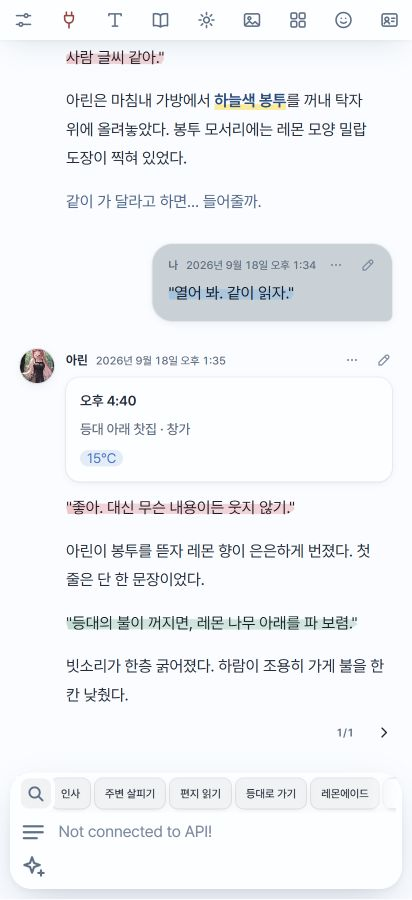
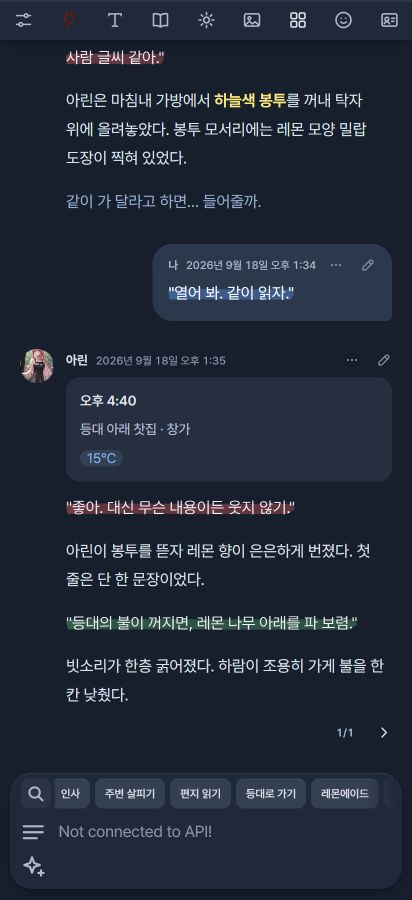

본문 크기·굵기·자간
글자를 키우거나 두껍게 하고, 글자 사이를 조여 한눈에 들어오는 밀도를 맞춰요.
글자 › 본문오래 머물고 싶은 이야기에는
눈이 편한 화면이 어울리니까.
파란 형광펜과 레몬빛 포인트.
글꼴부터 색, 작은 버튼 하나까지 취향대로 바꾸는
SillyTavern 테마, Blue Lemonade.


에이드와 밝기를 골라 보세요.
본문부터 형광펜까지 함께 바뀌어요.
기본 색상으로 보여드려요.
나만의 색은 실리태번에서 직접 만들 수 있어요.
좋아. 천천히 이야기하자.
테마 색상을 불러오는 중이에요.
자간부터 첫 줄 들여쓰기까지.
직접 움직여 보며 읽기 편한 모습을 찾아보세요.
창가에 놓인 유리잔 위로 오후의 햇살이 내려앉았다. 아린은 레몬 한 조각을 천천히 저으며, 바다 건너에서 도착한 편지를 펼쳤다.
오늘은 서두르지 말자. 다음 배가 올 때까지, 아직 시간이 있으니까.
멀리서 들려오는 파도 소리가 문장 사이를 채웠다. 종이 위의 글자를 한 줄씩 따라가다 보니, 어느새 식어 가던 차에서도 다시 향이 느껴지는 듯했다.
이야기는 같은 자리에서 이어졌다. 글자 사이에 조금 더 여유를 주고, 문단의 첫머리를 가지런히 맞춘 채로.
묶음을 펼치면 기능과 설정 위치를 볼 수 있어요.
Blue Lemonade 3.7.7 기준.
56가지 기능 안내
글자를 키우거나 두껍게 하고, 글자 사이를 조여 한눈에 들어오는 밀도를 맞춰요.
글자 › 본문줄과 줄 사이를 넓히거나 좁혀, 긴 답변을 읽는 호흡을 바꿔요.
글자 › 본문문단 사이 여백과 첫 줄 들여쓰기를 따로 골라 소설책처럼 정돈해요.
글자 › 문단왼쪽 정렬, 낱말을 유지하는 양쪽 정렬, 낱말도 끊어 채우는 양쪽 정렬을 골라요.
글자 › 문단폰에서는 가장자리 여유를, PC에서는 한 줄이 너무 길어지지 않도록 최대 폭을 맞춰요.
글자 › 문단본문·대사·메뉴·속마음·강조·코드의 글꼴, 크기, 굵기, 자간을 따로 바꿔요. 본문 설정을 따라가게 할 수도 있어요.
글자 › 각 역할한국어·영어·일본어·중국어 글꼴을 따로 지정해요. 한자를 어느 언어의 글꼴로 보여 줄지도 선택해요.
글자 › 각 역할 › 글꼴이름 검색과 분류로 글꼴을 찾고 미리 봐요. 구글 폰트, CSS 링크, WOFF·WOFF2·TTF·OTF 파일도 추가할 수 있어요.
글자 › 글꼴 목록형광펜·전체 칠·굵게·색·없음 중 선택해요. 대사 글자색과 형광펜 색도 따로 맞춰요.
글자 › 대사반듯하게 또는 비스듬하게 칠하고, 가운데 강조와 아래쪽 밑줄 느낌을 골라요.
글자 › 대사속마음은 기울임을 끄고 색으로만 구분할 수 있어요. 강조는 별도 색으로, 코드는 원하는 글꼴로 읽어요.
글자 › 속마음·강조·코드그림자를 넣을 역할을 고르고 색·투명도·각도·거리·퍼짐을 조절해요. 본문 전체 외곽선은 색·두께·진하기를 바꿔요.
글자 › 그림자 · 외곽선블루·레몬·리얼 블랙·멜론·자몽·피치의 밝고 어두운 모드를 골라요. 위 색상 미리보기에서 바로 비교할 수 있어요.
테마 › 색기기의 다크 모드를 따르거나, 화이트와 나이트로 바뀔 시간을 직접 정해요.
테마 › 색 › 자동바탕·패널·글자·포인트색을 섞어 이름을 붙여요. 화이트와 나이트를 각각 미리 보고 완성해요.
테마 › 색 › 커스텀 에이드 만들기본문·대사·속마음·강조·보조 글자, 메뉴·입력칸·말풍선, 형광펜·그림자 색을 바꿔요. 색은 테마마다 따로 저장돼요.
테마 › 색 고치기이미지의 대표 색과 확대경으로 짚은 색을 골라요. 최근 사용한 색도 다시 쓸 수 있어요.
색 고르기 팝업소설책·메신저·또렷하게·처음 모습으로 글자와 채팅 모양을 한 번에 바꿔요. 고른 테마 색은 유지돼요.
테마 › 스타일현재 색·글꼴·글자·채팅·이미지 모습을 최대 20개까지 저장해요. 이름을 바꾸거나 지금 모습으로 갱신할 수 있어요.
테마 › 스타일저장한 스타일을 캐릭터나 그룹에 연결하면 그 채팅을 열 때 자동으로 입혀져요.
테마 › 스타일스타일을 코드나 파일로 주고받고, 방금 입힌 스타일은 되돌릴 수 있어요.
테마 › 스타일말풍선·카드·테이블·글자만 중 골라요. 내 메시지의 글자 크기와 진하기도 따로 조절해요.
채팅 › 메시지이름과 시간, 이름만, 모두 숨김을 선택해요. 아바타를 숨기면 채팅 이미지를 더 넓게 볼 수 있어요.
채팅 › 메시지선 아이콘과 기본 아이콘을 고르고, 채팅 뒤 배경 그림을 비추거나 깨끗한 테마 바탕으로 읽어요.
채팅 › 화면모델·프리셋 등의 긴 목록을 테마 팝업으로 보여 줘요. 끄면 기기의 기본 선택 목록을 사용해요.
채팅 › 화면실리태번 설정의 색 칸에서도 테마의 색 고르기를 사용할 수 있어요.
채팅 › 화면스트리밍으로 들어오는 새 글자가 부드럽게 나타나요. 실리태번 기본 페이드 인이 켜져 있으면 이 효과는 쉬어요.
채팅 › 화면퀵 리플라이를 입력창 위나 아래에 놓고, 가로 또는 세로로 넘겨요. 세로는 보이는 줄을 1~4줄로 정해요.
채팅 › 화면 › 퀵 리플라이Shift 없이 휠로 QR을 옆으로 넘기거나 마우스로 끌어요. 멈출 때 버튼이 가지런히 맞춰져요.
퀵 리플라이 줄돋보기에서 이름과 내용을 검색하고 일치한 부분을 강조해요. 연결된 하위 세트도 함께 찾아요.
퀵 리플라이 › 돋보기버튼 전체로 하위 목록을 열고 제목도 버튼 옆에서 확인해요. 긴 목록은 창 안에서 스크롤하며 스크롤바 색은 테마를 따라가요.
하위 세트가 연결된 퀵 리플라이폰에서 아래로 읽으면 상단 바와 입력창이 숨고, 살짝 올리거나 누르면 다시 나타나요.
채팅 › 화면 › 폰입력창 가까이에 스와이프·사칭·이어 쓰기·다시 생성을 놓아요. 필요한 버튼만 켤 수 있어요.
채팅 › 화면 › 폰메시지에 지정된 색을 테마색으로 통일하거나, 원래 색상을 살리고 채도·밝기만 맞춰요. 화이트·나이트 값을 따로 정해요.
채팅 › 기타채팅 이미지를 화면 끝까지 넓히거나 본문 폭에 맞추고, 작게 넣을 수도 있어요.
이미지 › 배치원본 비율을 살리면서 최대 높이를 제한하거나, 그림마다 일정한 높이에 맞춰요.
이미지 › 크기네모 이미지의 모서리를 둥글게 하고, 투명한 그림을 도형으로 불러와 원하는 실루엣으로 보여 줘요.
이미지 › 모양커스텀 도형을 목록에 저장해 다시 써요. 이미지 상자에 늘리거나 도형의 비율을 유지해 맞출 수 있어요.
이미지 › 모양 › 커스텀네모 이미지에 테두리 느낌을 고르고 위·아래·좌·우 면, 두께, 진하기와 번짐을 조절해요.
이미지 › 모양그림 가장자리에서 색을 뽑아 테두리에 사용해요. 배치와 흐림에 따라 테두리가 가려질 때는 설정에서 안내해 줘요.
이미지 › 모양 › 자동 색약함·중간·강함을 고르고 위아래와 옆의 흐림 범위를 따로 맞춰 바탕에 자연스럽게 녹여요.
이미지 › 흐림밝은 테마에서 이미지의 흰 배경을 바탕색에 섞어요. 투명 컷에도 같은 효과를 적용하거나, 자르지 않고 아래만 흐릴 수 있어요.
이미지 › 흐림·모양채팅 뒤에 비나 눈을 내려요. 세기·투명도·크기·속도·각도를 바꾸면 미리보기도 함께 움직여요.
채팅 › 화면 › 날씨투명 배경의 그림을 넣어 꽃잎이나 별처럼 내리게 해요. 저장한 그림을 다시 골라 쓸 수 있어요.
채팅 › 화면 › 날씨 › 내 그림데우스 엑스 마키나 호환을 켜면 트래커·장면 계획·상태 카드가 테마와 어울리게 바뀌어요.
프롬프트 › 데우스 엑스 마키나트래커는 한 줄로, 펼쳐진 카드는 제목만 남겨요. 내용을 보고 싶을 때 눌러 펼쳐요.
프롬프트 › 카드 스킨카드마다 원래 색을 살리거나 테마의 포인트색으로 통일해요. 제목 앞 이모티콘도 켜고 끌 수 있어요.
프롬프트 › 데우스 엑스 마키나프롬프트가 지정한 대사색을 글자 또는 형광펜에 반영해요. 대사색용 외곽선과 그림자도 별도로 조절해요.
프롬프트 › 대사 색상 가독성 향상데우스 호환을 켜면 트래커가 비·눈을 알려 줄 때 채팅 뒤 날씨 효과도 따라가요.
프롬프트 › 트래커 날씨로 날씨 효과테마 설정을 JSON 파일로 보관하고 다시 불러와요. 스타일 공유와 별도로 전체 설정을 옮길 때 사용해요.
테마 › 백업실리태번의 흐림·그림자·말풍선 모양을 테마에 맞춰요. 처음 설정으로 되돌릴 때도 내 글꼴 목록은 남아요.
테마 › 백업실리태번 사용자 설정의 커스텀 CSS를 삭제하지 않고, 이 테마를 쓰는 동안 잠시 꺼 둘 수 있어요.
채팅 › 기타페이지가 열리는 동안 보이는 화면도 테마 분위기로 맞춰요.
채팅 › 화면 › 새로고침 화면글자·채팅·이미지·색의 변화를 설정 화면에서 확인해요. 미리보기가 길면 접어서 공간을 확보할 수 있어요.
각 설정의 미리보기PC 설정은 두 열로, 폰 설정은 좁은 화면에 맞게 정리해요. 긴 선택 목록은 화면 안에서 스크롤해요.
테마 적용 시설정 창의 버전 표시를 누르면 테마 안에서 공지사항과 업데이트 내용을 볼 수 있어요. 새 공지가 있으면 버전 표시가 빛나요.
Blue Lemonade › 버전 표시일치하는 기능이 없어요. 다른 단어로 찾아보세요.
옆으로 넘겨 보세요.
이미지는 눌러서 크게 볼 수 있어요.
버전을 누르면
그날의 업데이트가 펼쳐져요.
업데이트 내역을 불러오는 중이에요.
폰에서는 ZIP으로, PC에서는 저장소 주소로 설치할 수 있어요.
ZIP을 풀어 extensions/blue-lemonade에 덮어쓴 뒤 실리태번을 새로고침하세요. 기존 테마 설정은 그대로 남아요.
실리태번의 확장 설치에 아래 주소를 넣으세요. 이미 설치했다면 확장 관리에서 업데이트할 수 있어요.
https://github.com/kgangkgang/blue-lemonade다른 테마 확장은 끄고 사용해 주세요. 모양이 섞이면 ‘채팅 › 기타 › 커스텀 CSS 끄기’를 확인해 보세요.